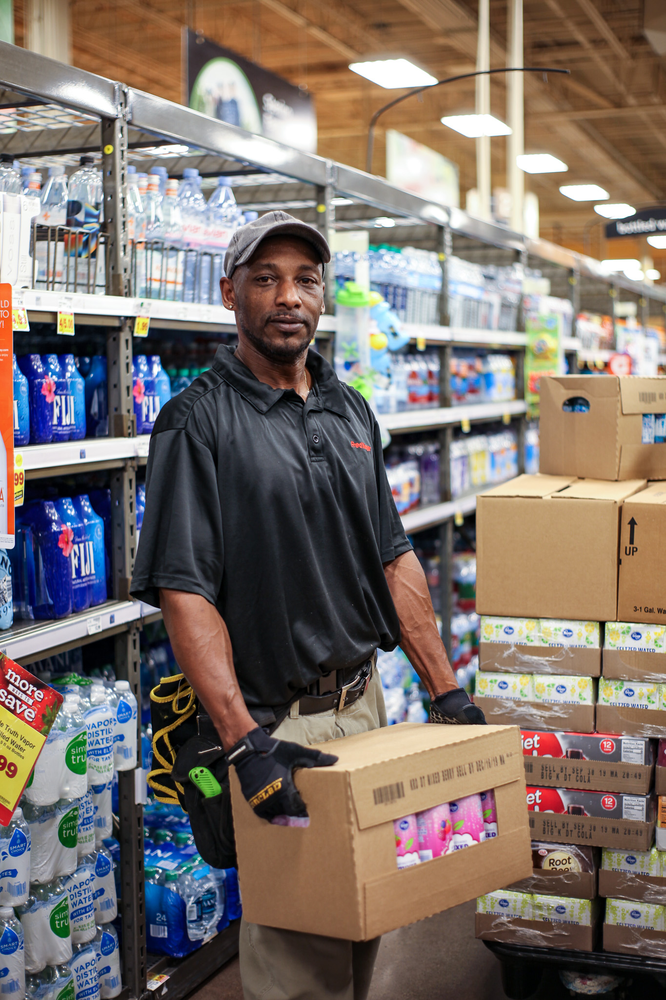

Humanizing the Frontline: The Living Wage Documentary Series
Data alone does not win contracts. To secure historic wage increases across multiple municipal and healthcare systems, we needed to humanize the statistics. By embedding with workers—from administrative desks to massive logistics warehouses—I architected a multi-modal storytelling campaign that replaced dry union rhetoric with raw, on-the-ground documentary photography.
VIEW FULL GALLERY